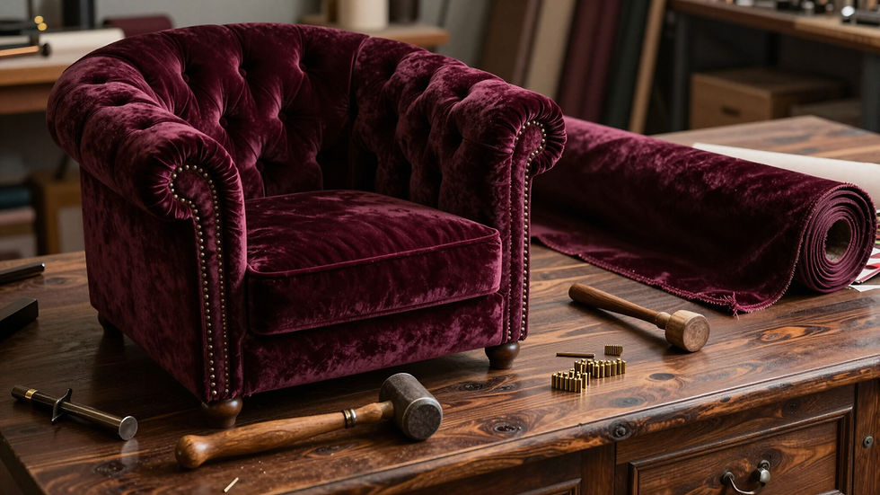
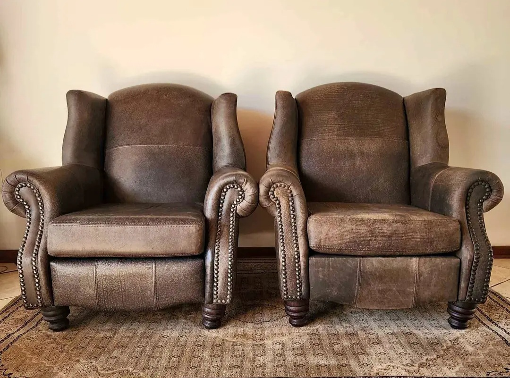
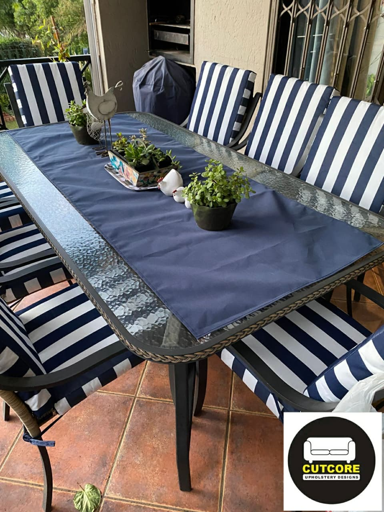
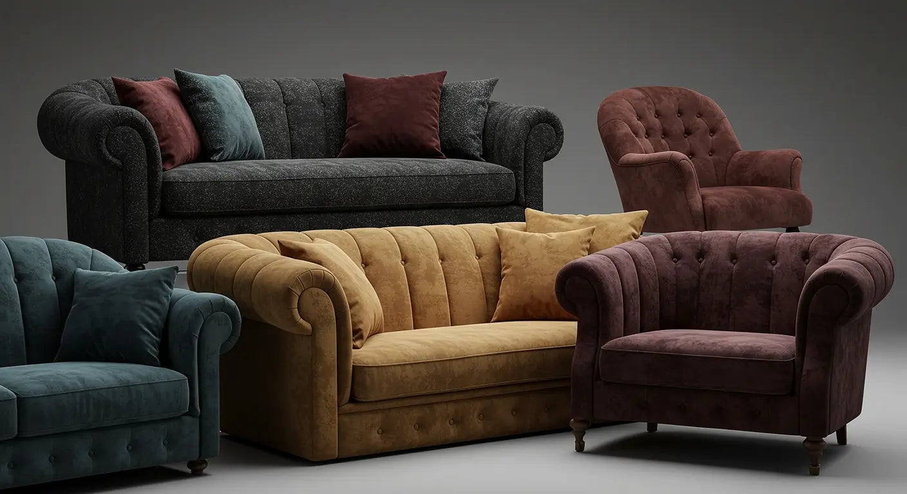

Upholstery work, sized to the piece in front of us
Every job starts with an honest look at the frame, foam and fabric. Below is what we handle most — if your piece doesn't fit neatly into a category, send a photo and we'll advise.

Recliner Repairs & Reupholstery
Manual and electric recliners are stripped back to the frame so we can check webbing, springs and the reclining mechanism before deciding what actually needs replacing.
- ✓Mechanism servicing and part replacement
- ✓Foam and cushion rebuild to your preferred firmness
- ✓Fabric or leather recover in your choice of material

Sofa, Couch & L-Shape Reupholstery
Two and three-seater sofas, corner units and L-shaped couches are reupholstered panel by panel, with frame joints reglued and reinforced where they've loosened over time.
- ✓Full strip-down or partial recover on high-wear panels
- ✓Frame, webbing and spring repairs included where needed
- ✓Scatter cushion and piping rebuilds to match
Dining Chair Upholstery
Seat pads, drop-in bases and full backrests are re-covered to refresh a tired dining set or match new chairs to an existing table.
- ✓Set pricing for matching multiple chairs
- ✓Foam density options for comfort or period accuracy
- ✓Piping, studs and trim detailing on request
Cane, Rattan & Wicker Re-caning
Hand-woven cane and rattan repairs for period furniture, headboards and outdoor pieces, using traditional weaving techniques.
- ✓Hand and machine cane weaving
- ✓Rush, rattan and wicker panel replacement
- ✓Frame repairs on antique and heirloom pieces
Patio & Outdoor Furniture
Sun- and weather-resistant fabrics and quick-dry foam keep outdoor lounge sets, benches and daybeds going for another season instead of the skip.
- ✓UV- and water-resistant fabric options
- ✓Quick-dry and mildew-resistant foam
- ✓Cushion sets made to your existing frame dimensions


Bespoke Furniture, Cushions & Slipcovers
When a full rebuild isn't necessary, we make custom scatter cushions, bench pads, headboards and fitted slipcovers to your measurements.
- ✓Made-to-measure slipcovers for sofas and chairs
- ✓Custom headboards and bench seating
- ✓Fabric sourcing guidance if you don't have your own
Not sure which category fits?
Send a photo on WhatsApp and we'll point you in the right direction, free of charge.